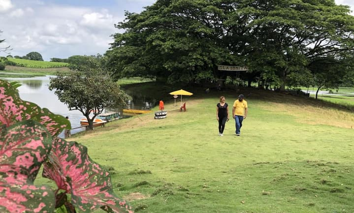
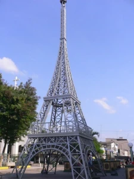
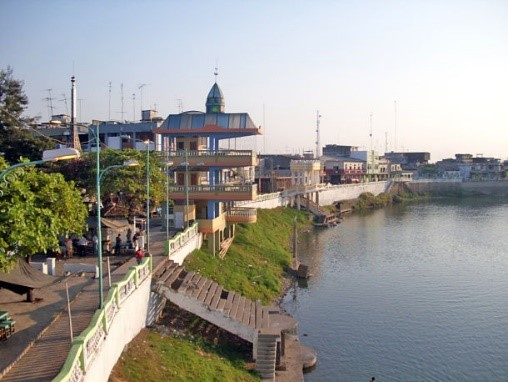
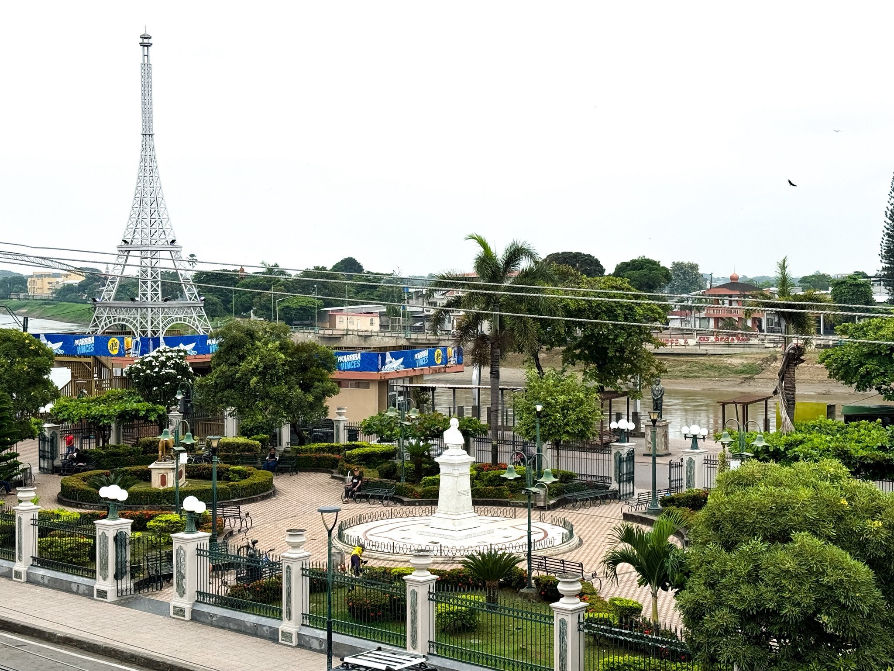
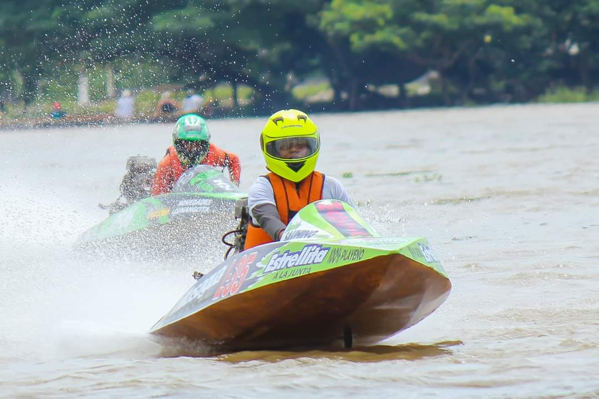

Este es, sin duda, el mayor tesoro natural de Vinces. Es un humedal de importancia internacional, reconocido por la Convención Ramsar. Se caracteriza por un conjunto de lagunas y ciénagas que albergan una rica biodiversidad de flora y fauna, incluyendo especies de aves en peligro de extinción y migratorias. El nombre "Abras de Mantequilla" se debe al color amarillento del barro que brilla con el sol en ciertas épocas.
Un símbolo de la influencia europea que marcó a Vinces durante su época dorada. Esta réplica de la famosa torre parisina se encuentra en la plaza central de la ciudad y es un punto de referencia para los visitantes, ideal para fotografías.
Un extenso malecón a lo largo del río Vinces, que ofrece un espacio agradable para pasear, disfrutar de la brisa y observar la vida ribereña. A lo largo del malecón, se pueden encontrar restaurantes y cevicherías que ofrecen la deliciosa gastronomía local.
La influencia europea se refleja en las antiguas edificaciones y el diseño del centro de la ciudad. El antiguo Palacio Municipal, con su estilo colonial, y el Parque Central son ejemplos de esta herencia y puntos clave para apreciar la historia de Vinces.
Aunque no es un "sitio" en sí mismo, es un evento turístico de trascendencia internacional que atrae a muchos visitantes en el mes de marzo. Es la regata de botes a motor fuera de borda más larga y peligrosa del país, y su ambiente festivo y emocionante la convierte en un gran atractivo.
